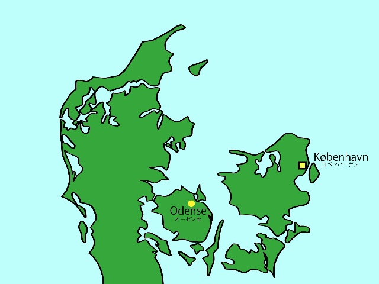

オーゼンセは，フューン島最大の町で，デンマークでは３番目に大きな町です．コペンハーゲンからは，特急に乗って１時間半程度で行くことができます．また，オーゼンセは，「人魚姫」や「みにくいあひるの子」，「マッチ売りの少女」などの童話で有名な，デンマークを代表する童話作家，アンデルセンの出身地としても有名です．オーゼンセの駅から少し歩くと，H.C.Andersens Hus (日本語で「アンデルセンの家」) という建物に行くことができます．これは，博物館で，主にアンデルセンの生涯そして童話作家としての活動に関するものが展示されています．これとは別に，市内にアンデルセンが１７歳になるまで過ごした生家も残されています．また，デンマーク人作曲家・カール・ニルスンも，オーゼンセの出身で，彼の業績や生涯について扱った博物館もあります．また，オーゼンセ大聖堂 (Skt.Knuds kirke) などもあるこの地区は，デンマークの古い町並みを今でも残しています．一度は訪れてみたいところです．